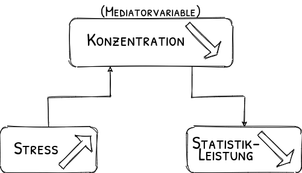
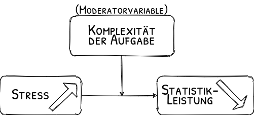
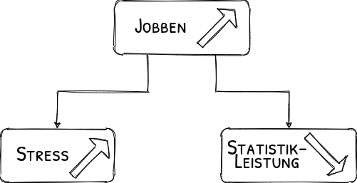

Literaturrecherche
Organisatorisches
Semesterplan
| Sitzung | Datum | Sitzungstitel |
|---|---|---|
| 1 | 02.11.2020 | Warum wissenschaftliche Psychologie |
| 2 | 28.11.2020 29.11.2020 | Hypothesen und der Prozess der Hypothesenprüfung |
| 3 | 28.11.2020 29.11.2020 | Experimentelles Vorgehen |
| 4 | 28.11.2020 29.11.2020 | Literaturrecherche |
| 5 | 28.11.2020 29.11.2020 | Operationalisieren und Messen |
| 6 | 12.12.2020 13.12.2020 | Experimentelle Versuchspläne |
| 7 | 12.12.2020 13.12.2020 | Störvariablen im Experiment |
| 8 | 12.12.2020 13.12.2020 | Nicht-experimentelle Versuchspläne |
| 9 | 12.12.2020 13.12.2020 | Material und Stichprobe |
| 10 | 23.1.2021 24.1.2021 | Auswertung, Darstellung und Interpretation |
| 11 | 23.1.2021 24.1.2021 | Ethische Probleme im Versuch |
| 12 | 23.1.2021 24.1.2021 | Publikationsprozess |
| 13 | wird noch bekannt gegeben | Vorstellung der Gruppenarbeiten |
| 14 | wird noch bekannt gegeben | Klausurvorbereitung |
Wiederholung
Kausalschlüsse


Design:
| Komplexität | |||||
| niedrig | hoch | ||||
| Stress | niedrig | steigende Schwierigkeit | steigende Schwierigkeit | ||
| hoch | sinkende Schwierigkeit | sinkende Schwierigkeit | |||
experimentelle vs. nicht-experimentelle Studien
| Nicht-experimentelle Studien | Experimentelle Studien |
|---|---|
| Vermutete Ursachen nur gemessen | Ursachen werden erzeugt |
| Zeitliche Reihenfolge oft unklar | Ursache kommt vor Wirkung |
| Störvariablen nur messbar (\(\neq\) Kontrolle) | Gute Kontrolle von Störvariablen |
| unbekannte Störvariablen nie kontrollierbar | z.T. auch unbekannte Störvariablen kontrollierbar |
| Kausalschluss nicht möglich | Kausalschluss möglich |
| Meist möglich | Nicht immer möglich (praktisch, ethisch) |
| Eher natürliches Setting | Eher künstliches Setting |
Literaturrecherche
Wozu überhaupt?

Theorie:
Überblick über bisherige Forschung verschaffen um:
Ein beobachtetes Phänomen in bestehende Theorien einzuordnen
Hypothesen über ein Phänomen abzuleiten
Nachzulesen welche Umsetzungsparameter für meine Studie vielversprechend sind
Wo?
PsychINFO
- Internationale bibliographische Datenbank
- Schwerpunkt: Psychologie / Sonstige: verwandte Gebiete wie Psychiatrie, Soziologie, Erziehungswissenschaften, Anthropologie, Pharmakologie, Physiologie, Kriminologie und Linguistik
- Zeitschriftenaufsätze, Bücher, Buchkapitel, Buchbesprechungen, Forschungsberichte, Fallstudien
- Von der APA gepflegt
PSYNDEX Tests
- Deutschsprachige Datenbank
- Schwerpunkt: psychologischen Testverfahren
- Rezensionen von Skalen, Fragebögen, Leistungstest
Pubmed
- Internationale bibliographische Datenbank
- Schwerpunkt: Medizin / Sonstige: Medizin, Biologie, Psychologie etc.
- Biomedizinische Zeitschriften und online-Bücher
- Volltext oder Links zu Volltext
Google Scholar
- Internationale bibliographische Suchmaschine
- Schwerpunkt: gibt es nicht
- Zeitschriftenaufsätze, Bücher, Buchkapitel, Buchbesprechungen, Forschungsberichte, Fallstudien,…
- teilweise Links zu Volltexten, oft nur Titelübersicht
Web of Science
- Internationale (vorwiegend englischsprachige) Datenbank
- Schwerpunkt: Liste von redaktionell ausgewählten Journals
- vorwiegend Zeitschriftenaufsätze
- teilweise Links zu Volltexten aus dem Uninetz
Testzentrale
- (kommerzielle) Website vom Hogrefe-Verlag
- Schwerpunkt: Verkauf von Hogrefe-Testverfahren
- Aber in der Übersicht zu den Tests Rezensionen von Skalen, Fragebögen, Leistungstest
Links
PsychINFO und PSYNDEX (Nur aus dem Uninetz nutzbar)
Wie Studien finden?
Schneeballsystem
- mit Übersichtsarbeiten anfangen (Reviews, Metaanalysen, Lehrbuchkapitel,…)
- an Literaturhinweisen ‘entlang hangeln’
Autorenorientiertes Vorgehen
- anhand von allgemeinen Suchbegriffen Arbeitsgruppe(n) finden
- anhand der Autoren nach anderen Studien suchen
Wie Studien beschaffen?
- PDF-link in pubmed folgen (nur im Netz der Uni)
- Google: „Titel" filetype:pdf
- Von den Betreuenden
- Über ResearchGate/Mendeley geteilte Artikel downloaden
- Communicating author anschreiben und um PDF bitten
- Fernleihe
- Gebührenpflichtige Direktlieferdienste (Subito)
- …
Was mache ich mit den beschafften Studien?
verwalten
Citavi (Windows & Mac)
- vom RZ gestellt: Citavi beim RZ
Endnote (Windows)
Mendeley (Windows, Linux & Mac)
- kostenlos, gehört aber zu Elsvier
Zotero (Windows, Linux & Mac)
- Open Source, hier erhältlich
Rechercheaufgaben Pubmed
Neuere Übersichtsartikel zu einem Thema finden
- Sie möchten wissen, ob Sport („Exercise“) bei Depression („depression”) hilft. Finden Sie einen Übersichtsartikel („Review"), der den aktuellen Forschungsstand zusammenfasst.
Einen bestimmten Artikel finden
- Ihr Bachelorarbeitsbetreuer erinnert sich dunkel, dass mal in der Zeitschrift „Science" ein Artikel mit dem Titel „By Carrot or by Stick" erschienen ist. Finden Sie die Literaturangabe, besorgen sie den Artikel und finden Sie die Homepage des Erstautors.
Artikeln eines Autors finden
- Von einer Kommilitonin haben Sie den Tipp bekommen, dass der Autor Jan Born interessante Artikel zum Thema Schlaf geschrieben hat. Finden Sie einen neueren Artikel von Born zum Thema Gedächtniskonsolidierung („consolidation“) im Schlaf („sleep”).
Rechercheaufgaben PsynDex Tests:
Skalen zur Sozialen Angststoerung (SOZAS)
- Finden Sie heraus für welche Altersgruppe die SOZAS geeignet sind.
- Wo kann man das Instrument kaufen und wieviel kostet es?
Selbstwert
- Finden Sie ein Instrument, mit dem man Selbstwert bei Kindern messen kann.
Procrastination
- Finden Sie einen Fragebogen, mit dem man Procrastination (Aufschieberitis) bei Jugendlichen und Erwachsenen messen kann.
Rechercheaufgabe Web of Science:
- Schneeballsuche
- Sie haben von Ihrem Betreuer mitgeteilt bekommen, dass die Studie “Job burnout” von Maslach und anderen aus dem Jahre 2001 eine einflussreiche Arbeit im Bereich der Burnout-Forschung ist. Nun wollen Sie sich einen Überblick darüber verschaffen, wie sich die Zitationen dieses Reviews im zeitlichen Verlauf geändert haben. Erstellen Sie einen entsprechenden Zitationsreport.
- Relevante Journals
- Sie haben in vielen Artikeln die folgende Zitation gesehen: “Faul, F., Erdfelder, E., Lang, A. G., & Buchner, A. (2007). G* Power 3: A flexible statistical power analysis program for the social, behavioral, and biomedical sciences. Behavior research methods, 39(2), 175-191.” Da Sie der Einsatz von Power-Berechnungen brennend interessiert, wollen Sie sich einen Überblick über Journals verschaffen, in denen dieser Aufsatz zitiert wurde. Finden Sie die zehn Jounals, in denen das Buch von Cohen am häufigsten zitiert wurde.
Hausaufgabe
Vorarbeit für die Präsentation:
Theoretischen Rahmen ausarbeiten
- Hypothesen dem theoretischen Rahmen anpassen
Literaturangaben für dafür zu Rate gezogene Studien erstellen (APA/IfP)